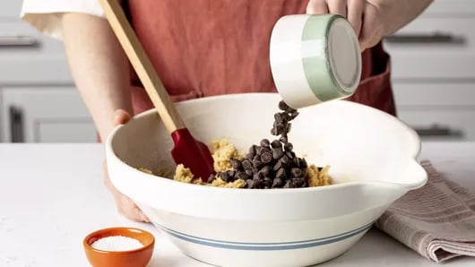

Chocolate chip cookies are one of those classic treats you reach for
around the holidays but also year-round—and this recipe is the best of
the best. Slightly crispy on the outside and perfectly chewy in the
middle, these homemade chocolate chip cookies are sure to impress
cookie connoisseurs everywhere. Ready to bake up a batch or two of
deliciousness?
Betty has fine-tuned this chocolate chip
cookies recipe to perfection over more than 50 years. That’s how you
know it’s really, really good. The best part? It only takes 15 minutes
to prep! This is one recipe you’ll be reaching for just about every
time you need an easy dessert that’s perfect for sharing. It’s no
wonder these cookies are top-rated by hundreds of satisfied home
bakers. Serve your chocolate chip cookies alongside other festive
Christmas cookies or bake a batch whenever you’re craving a sweet
treat.
Origins of the Chocolate Chip Cookie
Wondering who invented chocolate chip cookies? This tasty treat was
actually an accidental invention! (How lucky are we?) The first
chocolate chip cookie was baked by Ruth Wakefield in the late 1930s.
As the story goes, Wakefield, who ran the popular Toll House Inn, was
experimenting with different cookie recipes and decided to add broken
pieces of semi-sweet chocolate into her cookie dough. That makes sense
to us, since everything is better with chocolate! She expected the
chocolate to melt fully and create a chocolate cookie, but the bits of
chocolate kept their shape—and thus, chocolate chip cookies were
born!
Wakefield originally called her creation the Toll House Chocolate
Crunch Cookie and published it in a cookbook. The rest is tasty
history, with the cookie gaining popularity worldwide and becoming a
beloved treat. We’re endlessly thankful for this iconic sweet and all
the delicious variations that have been developed since!
How to Make Homemade Chocolate Chip Cookies
This easy chocolate chip cookie recipe comes together in a flash with
the help of some pantry staples like flour and baking soda. Let’s take
a quick look at how to make this classic treat. Once you see how easy
it is, we think you’ll agree that this is the best chocolate chip
cookie recipe around! The full recipe and ingredients list can be
found below.
Make Your Dough
First, you’ll combine a few dry ingredients—flour, baking soda and
salt—in one bowl. In another bowl, cream the granulated and brown
sugars into softened butter for a fluffy mixture. Beat in an egg and
vanilla, then stir in your flour mixture until just blended to form a
stiff dough. In baking, you’ll typically always mix dry ingredients
into wet ones for even distribution and mixing. Stir in the chocolate
chips (an absolute necessity) and nuts (optional), and you’re almost
ready to bake some delicious homemade chocolate chip cookies.
Shape Cookies
Drop rounded tablespoonfuls of dough onto an ungreased cookie sheet.
You can do this with a spoon, but a scoop makes things extra easy!
Bake and Enjoy
Place your cookie sheet in the oven and bake until cookies are a
beautiful light golden brown at the edges. Let them cool on a wire
cooling rack. Once fully cooled, serve and enjoy.
How to Store Chocolate Chip Cookies so They Last Longer
Nobody likes a stale cookie. So how long are chocolate chip cookies
good for, and how do you keep them soft and fresh? If you end up with
leftovers after making this recipe, the baked and cooled cookies can
easily be stored in a sealed container or food-storage bag at room
temperature or in the freezer to be enjoyed later. Homemade chocolate
chip cookies will last for a few days when stored properly on the
counter and will last even longer when kept in the freezer. When
frozen, they can last up to 2 months! Find freezing instructions
below.
When you run out of leftovers, take a peek at our full collection of
chocolate chip cookie recipes to discover a new favorite! Whether
you’re craving fudgy brownie cookies or that perfect chocolate-peanut
butter combo, we’ve got just the thing.
Try Popular Variations of This Recipe
Can’t get enough of these homemade chocolate chip cookies? We don’t
blame you! There are plenty more delicious treats where this recipe
came from. Keep the cookie sheets out and get baking with some of
these ultra tasty variations. And if you’re feeling extra adventurous,
we’ve got even more cookie recipes for you to browse!
Double Chocolate Chip Cookies: Double the decadence
with a batch of double chocolate chip cookies! These from-scratch
beauties come together in just 30 minutes for a quick sweet treat.
Chocolate Chip-Oatmeal Shortbread Cookies: Enjoy that
classic light, buttery shortbread taste with the added deliciousness
and texture of chocolate chips and oats.
Gluten-Free Chocolate Chip Cookies: Need a
gluten-free dessert option? These gluten-free chocolate chip cookies
made with the help of Bisquick™ will hit the spot!
Vegan Chocolate Chip Cookies: Our vegan chocolate
chip cookies recipe makes a sweet, chewy cookie that’s just as tasty
as the original!
Ingredients
- 2 1/4 cups Gold Medal™ all-purpose flour
- 1 teaspoon baking soda
- 1/2 teaspoon salt
- 1 cup butter, softened
- 3/4 cup granulated sugar
- 3/4 cup packed brown sugar
- 1 egg
- 1 teaspoon vanilla
- 2 cups semisweet chocolate chips
- 1 cup coarsely chopped nuts, if desired
Steps

